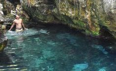
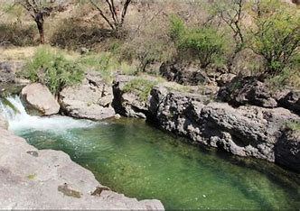
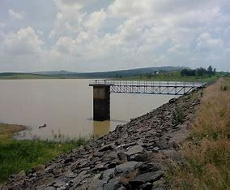
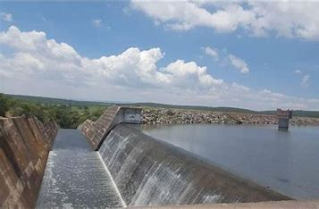
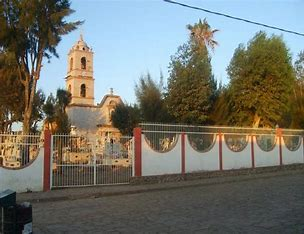
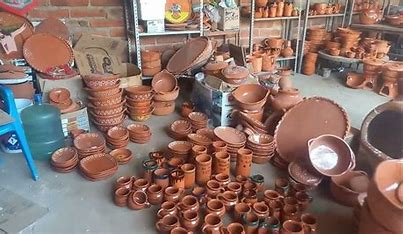

Cuquío es un encantador municipio que ofrece una gran riqueza turística, gracias a su diversidad cultural, histórica y natural. Su principal atractivo radica en sus paisajes naturales, ideales para quienes buscan experiencias al aire libre, tranquilidad y conexión con la naturaleza.
Además, cuenta con sitios religiosos, tradiciones vivas, gastronomía típica y una comunidad cálida que enriquece la experiencia de cada visitante.
Uno de los destinos más emblemáticos y visitados año con año es el impresionante paraje de las Aguas Termales conocidas como "Agua Caliente", un verdadero tesoro natural que atrae a cientos de turistas por su belleza inigualable y su atmósfera relajante.

A escasos pasos de estas aguas termales se encuentra el icónico Río Verde, un lugar ideal para disfrutar en familia. Aquí, los visitantes pueden convivir, preparar alimentos al aire libre y refrescarse en sus tranquilas aguas, perfectas para nadar y relajarse.

El entorno natural es simplemente espectacular: rodeado de frondosos árboles que proporcionan sombra fresca durante todo el día, el lugar ofrece una experiencia de contacto directo con la naturaleza. Su ambiente tranquilo lo convierte en un refugio perfecto para escapar del estrés cotidiano.
Además, muchas familias optan por acampar en la zona, una actividad segura y económica que permite extender la aventura y disfrutar de la serenidad del entorno durante la noche.
Sin duda, "Agua Caliente" y el Río Verde conforman un destino imprescindible para quienes buscan disfrutar de la naturaleza, el descanso y la convivencia familiar en su máxima expresión.
Ubicada en un entorno natural de gran belleza, Presa Los Gigantes es un destino turístico perfecto para quienes buscan desconectarse de la rutina y disfrutar al aire libre. Este mágico lugar ofrece una experiencia única en contacto con la naturaleza, ideal para el senderismo y la exploración.

Una de sus joyas es una pequeña cascada que fluye entre los paisajes verdes, brindando una postal digna de fotografiar. También cuenta con un mirador panorámico, desde donde puedes admirar en todo su esplendor la presa y sus aguas tranquilas rodeadas de vegetación.
A los pies de la presa encontrarás una encantadora área arbolada, equipada con mesas, asadores y espacios para convivir, perfecta para disfrutar de una comida campestre en familia o con tu pareja.

Ya sea para una caminata tranquila, un picnic inolvidable o simplemente para contemplar la belleza del paisaje, Presa Los Gigantes es el lugar ideal para disfrutar una tarde perfecta rodeado de naturaleza.
En Teponahuasco, las noches tienen un encanto muy especial. Este pintoresco poblado es conocido por su gran variedad de artesanías locales y la amabilidad de su gente, lo que lo convierte en un destino cálido y acogedor para quienes buscan una experiencia auténtica.

Al caer la noche, las calles de Teponahuasco se llenan de luz, color y alegría. Numerosos puestos de artesanías se instalan a lo largo de sus calles, ofreciendo desde textiles tradicionales hasta piezas únicas hechas a mano, ideales para llevarse un pedacito del lugar a casa.
También podrás disfrutar de una amplia variedad de comida callejera, donde destacan los famosos elotes preparados, antojitos típicos y otros platillos que deleitan el paladar de locales y visitantes.

El ambiente festivo, acompañado de música, luces y la calidez de su gente, convierte cada noche en Teponahuasco en una verdadera celebración.
Teponahuasco de noche es sinónimo de tradición, sabor y comunidad. Una experiencia mágica que no te puedes perder.